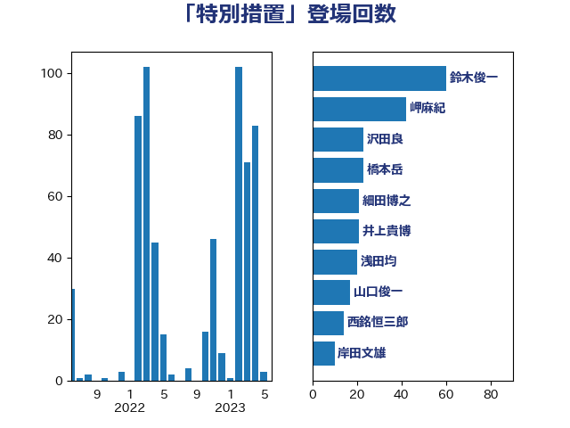

単語「特別措置」

| 鈴木俊一 | 自由民主党 | 60 回 |
| 岬麻紀 | 日本維新の会 | 42 回 |
| 沢田良 | 日本維新の会 | 23 回 |
| 橋本岳 | 自由民主党 | 23 回 |
| 細田博之 | 自由民主党 | 21 回 |
| 井上貴博 | 自由民主党 | 21 回 |
| 浅田均 | 日本維新の会 | 20 回 |
| 山口俊一 | 自由民主党 | 17 回 |
| 西銘恒三郎 | 自由民主党 | 14 回 |
| 岸田文雄 | 自由民主党 | 10 回 |
| 三ッ林裕巳 | 自由民主党 | 9 回 |
| 青木一彦 | 自由民主党 | 8 回 |
| 田村貴昭 | 日本共産党 | 8 回 |
| 塚田一郎 | 自由民主党 | 8 回 |
| 住吉寛紀 | 日本維新の会 | 7 回 |
| 阿部知子 | 立憲民主党 | 6 回 |
| 古賀友一郎 | 自由民主党 | 6 回 |
| 高木毅 | 自由民主党 | 5 回 |
| 谷公一 | 自由民主党 | 5 回 |
| 岡本三成 | 公明党 | 5 回 |
| 勝部賢志 | 立憲民主党 | 5 回 |
| 長友慎治 | 国民民主党 | 4 回 |
| 西岡秀子 | 国民民主党 | 4 回 |
| 横沢高徳 | 立憲民主党 | 4 回 |
| 東徹 | 日本維新の会 | 4 回 |
| 早稲田ゆき | 立憲民主党 | 4 回 |
| 斎藤嘉隆 | 立憲民主党 | 4 回 |
| 大西英男 | 自由民主党 | 4 回 |
| 前川清成 | 日本維新の会 | 4 回 |
| 前原誠司 | 国民民主党 | 4 回 |
| 中根一幸 | 自由民主党 | 4 回 |
| 中島克仁 | 立憲民主党 | 4 回 |
| 高鳥修一 | 自由民主党 | 3 回 |
| 阿部司 | 日本維新の会 | 3 回 |
| 道下大樹 | 立憲民主党 | 3 回 |
| 稲富修二 | 立憲民主党 | 3 回 |
| 秋野公造 | 公明党 | 3 回 |
| 牧山ひろえ | 立憲民主党 | 3 回 |
| 柴田巧 | 日本維新の会 | 3 回 |
| 徳永久志 | 立憲民主党 | 3 回 |
| 山東昭子 | 自由民主党 | 3 回 |
| 堂込麻紀子 | 無所属 | 3 回 |
| 伴野豊 | 立憲民主党 | 3 回 |
| 井坂信彦 | 立憲民主党 | 3 回 |
| 藤田文武 | 日本維新の会 | 2 回 |
| 萩生田光一 | 自由民主党 | 2 回 |
| 芳賀道也 | 国民民主党 | 2 回 |
| 田名部匡代 | 立憲民主党 | 2 回 |
| 櫻井周 | 立憲民主党 | 2 回 |
| 梅村聡 | 日本維新の会 | 2 回 |
| 枝野幸男 | 立憲民主党 | 2 回 |
| 末松義規 | 立憲民主党 | 2 回 |
| 木原誠二 | 自由民主党 | 2 回 |
| 斉藤鉄夫 | 公明党 | 2 回 |
| 岡本あき子 | 立憲民主党 | 2 回 |
| 宮崎雅夫 | 自由民主党 | 2 回 |
| 大島敦 | 立憲民主党 | 2 回 |
| 塩村あやか | 立憲民主党 | 2 回 |
| 上田勇 | 公明党 | 2 回 |
| 上月良祐 | 自由民主党 | 2 回 |
| 鬼木誠 | 立憲民主党 | 1 回 |
| 金子恵美 | 立憲民主党 | 1 回 |
| 野間健 | 立憲民主党 | 1 回 |
| 遠藤良太 | 日本維新の会 | 1 回 |
| 足立康史 | 日本維新の会 | 1 回 |
| 谷合正明 | 公明党 | 1 回 |
| 西村康稔 | 自由民主党 | 1 回 |
| 菅直人 | 立憲民主党 | 1 回 |
| 舩後靖彦 | れいわ新選組 | 1 回 |
| 緒方林太郎 | 無所属 | 1 回 |
| 竹谷とし子 | 公明党 | 1 回 |
| 福田昭夫 | 立憲民主党 | 1 回 |
| 福島伸享 | 無所属 | 1 回 |
| 石井拓 | 自由民主党 | 1 回 |
| 田中健 | 国民民主党 | 1 回 |
| 猪口邦子 | 自由民主党 | 1 回 |
| 源馬謙太郎 | 立憲民主党 | 1 回 |
| 清水貴之 | 日本維新の会 | 1 回 |
| 浜田聡 | NHK党 | 1 回 |
| 浅尾慶一郎 | 自由民主党 | 1 回 |
| 松沢成文 | 日本維新の会 | 1 回 |
| 松村祥史 | 自由民主党 | 1 回 |
| 松本剛明 | 自由民主党 | 1 回 |
| 松木けんこう | 立憲民主党 | 1 回 |
| 村田享子 | 立憲民主党 | 1 回 |
| 本田顕子 | 自由民主党 | 1 回 |
| 有村治子 | 自由民主党 | 1 回 |
| 新妻秀規 | 公明党 | 1 回 |
| 新垣邦男 | 立憲民主党 | 1 回 |
| 後藤茂之 | 自由民主党 | 1 回 |
| 庄子賢一 | 公明党 | 1 回 |
| 川田龍平 | 立憲民主党 | 1 回 |
| 岩谷良平 | 日本維新の会 | 1 回 |
| 山崎誠 | 立憲民主党 | 1 回 |
| 山口晋 | 自由民主党 | 1 回 |
| 山口壯 | 自由民主党 | 1 回 |
| 尾辻秀久 | 無所属 | 1 回 |
| 宮本徹 | 日本共産党 | 1 回 |
| 宗清皇一 | 自由民主党 | 1 回 |
| 大河原まさこ | 立憲民主党 | 1 回 |
| 大塚耕平 | 国民民主党 | 1 回 |
| 塩川鉄也 | 日本共産党 | 1 回 |
| 吉田はるみ | 立憲民主党 | 1 回 |
| 古川直季 | 自由民主党 | 1 回 |
| 友納理緒 | 自由民主党 | 1 回 |
| 伊波洋一 | 無所属 | 1 回 |
| 今井絵理子 | 自由民主党 | 1 回 |
| 中川正春 | 立憲民主党 | 1 回 |
| 一谷勇一郎 | 日本維新の会 | 1 回 |